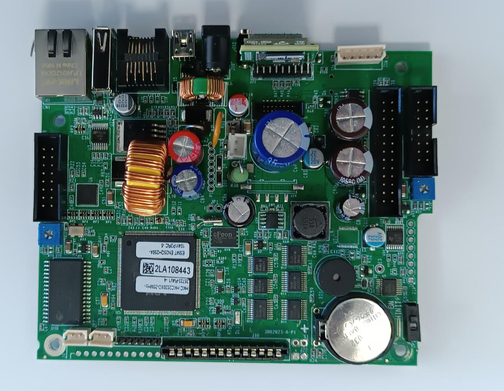
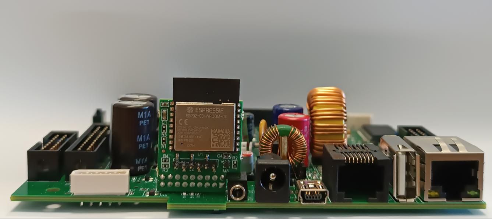

Installazione e collegamenti
Panoramica
Questo capitolo descrive la struttura del registratore, la scheda processor, l'alimentazione, la batteria interna, i collegamenti alle periferiche e i canali di comunicazione con il PC.
Struttura base
Il registratore è formato da una base e da un cover superiore, collegati tra loro con cavi.
I componenti principali sono:
- stampante termica;
- display, con una o due righe a seconda del modello;
- tastiera;
- Giornale Elettronico (GE) memorizzato su micro-SD.
da confermare il fissaggio del cover, la larghezza della carta e la lunghezza massima del rotolo.
Display e tastiera
| Modello | Display | Tastiera |
|---|---|---|
| ZERO Plus | 1 riga | 30 tasti più SHIFT |
| Smarty Plus | 2 righe | 40 tasti |
| Smarty Tour+ | 1 riga | 40 tasti |
| Jolly | 2 righe | 30 tasti più SHIFT |
| Smarty evo | 2 righe | 40 tasti |
| Smarty evo+ | 2 righe | 40 tasti |
- ZERO Plus e Smarty Tour+: display a una riga.
- ZERO Plus e Jolly: tastiera a 30 tasti più SHIFT.
Scheda processor
Tutti i connettori principali si trovano sulla scheda processor, alloggiata nella base.

| Sigla | Connettore | Uso |
|---|---|---|
| A1 | Ethernet RJ45 10/100 | Collegamento alla rete locale |
| A2 | USB tipo A | Pen-drive per l'aggiornamento del software |
| A3 | RJ45 RS232 | Collegamento seriale a PC o periferiche |
| A4 | USB tipo mini B | Collegamento al PC |
| A5 | Alimentazione | Alimentatore esterno |
| A7 | Micro-SD | Giornale Elettronico (GE) |
da confermare la corrispondenza tra le sigle dei connettori (A1–A9, B1, B2, C1–C4, D1–D5) e i jumper.
Alimentazione
Collegare l'alimentatore esterno, a 12 V, al connettore A5.
Il cassetto portamonete si apre con un impulso di 50 ms.
da confermare la corrente e il tipo di connettore dell'alimentatore, e il connettore del cassetto.
Batteria interna
- Smarty Tour+ e Jolly: batteria interna ricaricabile e versione ambulante. Gli altri modelli non hanno batteria interna.
Con l'alimentatore scollegato, premere [subtotale] fuori da una vendita. Il display mostra la percentuale di carica residua, nel formato BATTERIA seguito dal valore in percentuale.
Con l'alimentatore collegato, premere [subtotale] fuori da una vendita. Il display mostra:
- BATT.IN CARICA, se la batteria è in ricarica;
- CARICA SOSPESA, se la ricarica è sospesa;
- ALIM.RETE, negli altri casi.
Per Jolly, il menu 820 [menu] include l'opzione 60 ICONA BATTERIA.
Su Smarty Tour+ e Jolly sono attivi due avvisi di batteria scarica. Quando la batteria è quasi scarica, il display mostra BATT.QUASI SCAR. per circa un secondo e la stampa prosegue. Quando è scarica, il display mostra BATT. SCARICA e il registratore si spegne. Gli avvisi vengono controllati prima della stampa di uno scontrino.
da confermare la corrispondenza tra le soglie di tensione della batteria e la percentuale mostrata.
Ethernet (A1)
Il connettore RJ45 A1 supporta reti Ethernet standard 10/100 Mbps.
da confermare il tipo di cavo per il collegamento no-autosense.
USB
Pen-drive (A2)
Il connettore USB tipo A (A2) accetta una pen-drive standard. La pen-drive serve per l'aggiornamento del software: vedere Aggiornamento firmware.
PC (A4)
Il connettore USB tipo mini B (A4) collega il PC. Usare un cavo con connettore USB tipo A dal lato PC e mini B dal lato registratore.
Il collegamento USB appare al PC come porta seriale virtuale.
da confermare il driver da installare sul PC.
Seriale RS232 (A3)
Il connettore RJ45 RS232 (A3) collega un PC, un lettore di codici a barre o un terzo display su torretta. La periferica si sceglie dal menu 832 [menu], descritto più avanti.

da confermare la piedinatura del connettore RJ45 RS232, la corrispondenza con i cavi Cannon 9 e 25 pin e l'eventuale alimentazione a 5 V sul pin 4.
Configurazione della porta seriale (menu 832)
Il menu 832 [menu] PROGR. SERIALI associa la porta RS232 a una periferica. Le periferiche disponibili sono:
- PC;
- SCANNER, il lettore di codici a barre;
- TORRETTA, il terzo display esterno;
- POS.
È abilitata una sola periferica alla volta. Abilitandone una, le altre si disattivano.
Per il terzo display su torretta non si imposta la velocità. Per le altre periferiche si imposta la velocità di trasmissione, da 1200 a 115200 baud, la parità (nessuna, pari o dispari), i bit dati (8 o 7) e i bit di stop (1 o 2).
Le impostazioni iniziali sono 9600 baud, 8 bit dati, nessuna parità e 1 bit di stop.
Canali di comunicazione
Per collegare il PC si sceglie il canale fisico: USB, SERIALE o LAN (Ethernet). Usare i tasti [↑] o [↓] per scegliere il canale e confermare con [menu].
Con il dongle collegato l'elenco dei canali è diverso. Se si sceglie SERIALE, il display mostra RIMUOVERE DONGLE.
| Codice | Funzione |
|---|---|
| 702 [menu] | Simulazione tastiera con echo |
| 703 [menu] | Simulazione tastiera con echo, solo errori |
| 704 [menu] | Fine collegamento con il PC: termina la simulazione e disattiva il protocollo XON-XOFF sulla porta |
| 707 [menu] | Simulazione tastiera con echo totale |
| 720 [menu] | Attiva il collegamento con il PC (COLLEG.PC ATTIVO) |
| 781 [menu] | Attiva il protocollo XON-XOFF sulla porta scelta (XON-XOFF ATTIVO) |
| 791 [menu] | Invio del Giornale Elettronico, globale |
| 792 [menu] | Invio del Giornale Elettronico per date |
| 793 [menu] | Invio del Giornale Elettronico per date e scontrino |
il buffer di ricezione XON-XOFF è di 8.000 caratteri, sia per USB ed Ethernet sia per la porta RS232.
- Smarty evo, Smarty evo+ e Jolly: modulo Wi-Fi interno. Nel menu 820 [menu] l'opzione 59 si chiama DISAB. WIFI.
- ZERO Plus, Smarty Plus e Smarty Tour+: dongle Wi-Fi esterno. Nel menu 820 [menu] l'opzione 59 si chiama DISAB. DONGLE.
con il dongle Wi-Fi collegato il menu 832 non si apre e compare RIMUOVERE DONGLE. Questo vale per ZERO Plus, Smarty Plus e Smarty Tour+.
Installazione
- Collocare il registratore su un piano stabile.
- Collegare l'alimentatore esterno al connettore A5.
- Collegare il PC al connettore A4 (USB) oppure al connettore A3 (RS232).
- Collegare la rete al connettore A1 (Ethernet) oppure, sui modelli previsti, il dongle Wi-Fi.
- Collegare le periferiche al connettore previsto e portare l'interruttore di accensione in ON.
Prima accensione
Dopo il collegamento, portare l'interruttore in ON. Per la prima configurazione vedere Primi passi e vendita e Programmazione.
All'avvio il registratore stampa il messaggio INIZIALIZZAZIONE. Dopo un aggiornamento del software stampa invece il messaggio di aggiornamento.